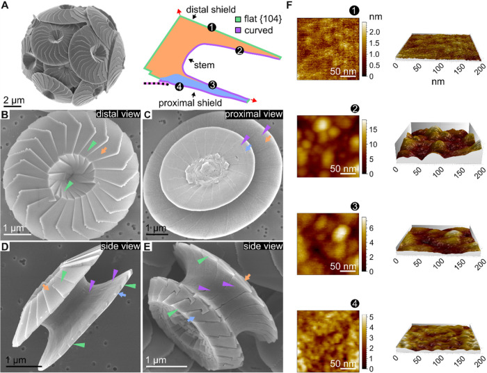

coccolith
An individual mineralized scale produced by a coccolithophore, with a characteristic arrangement of calcite crystals. Coccoliths form elements of the external cell covering, the coccosphere, and can be shed as free scales. [DOI:10.1126/sciadv.adc8728]

NCBITaxon:127549) · Emanuel M. Avrahami, Dmitry Karpov, Lior Aram, Nadav Elad, Razi Safadi, Irit Rosenhek-Goldian, Xiao-Meng Sui, Diede de Haan, Neta Varsano, Sidney R. Cohen, et al.; CC BY 4.0, via PubMed Central · CC_BY_4_0 · source: PMC PMC13067266.1 fig1 · DOI:10.1021/jacs.6c02151Components
| Component | Type | Part of / acts on | Grounding | Genes | Stoichiometry | Essential | Role |
|---|---|---|---|---|---|---|---|
| calcite | Small molecule | part of | CHEBI:46719 | UNKNOWN | Mineral material of the coccolith crystal assembly.
| ||
| coccolith-associated organic material | Other | part of | Reviewed label only (reviewed name; no accession asserted) | UNKNOWN | Organic material associated with the mineral scale, including the base plate. In tested Emiliania huxleyi coccoliths, removal of surface organics reduces adsorption to cells.
|
Canonical examples
NCBITaxon:127549Calcidiscus leptoporus — Strain RCC1130. SEM and AFM characterize mature coccoliths with distal and proximal shields and a connecting stem. Supplementary Methods describe coccolith isolation, cleaning and SEM preparation; these dimensions and surfaces are species- and sample-specific. [DOI:10.1021/jacs.6c02151]NCBITaxon:2903Emiliania huxleyi — Calcified CCMP374 supplies coccoliths for adsorption experiments with naked cells; the paper also tests other morphotypes and recipient strains. The species label follows the verified NCBI/ENA authority. The record does not generalize one morphotype's attachment behavior to all coccoliths. [DOI:10.1126/sciadv.adc8728]
Functions
- cell-covering element — Individual coccolith scales form elements of the external coccosphere. This structural role does not itself establish protection against every predator, virus or environmental stress.
DOI:10.1021/jacs.6c02151Figure 1A shows a coccolith-covered cell, while Figures 1B-E resolve individual scales.
- cell-surface adsorption — In Emiliania huxleyi experiments, isolated coccoliths adsorb to cells; oxidation of coccolith-associated organic material reduces this attachment. This is an observed interaction in the tested system, not a universal adaptive benefit.
DOI:10.1126/sciadv.adc8728Results, Figure 3 and coccolith-treatment Methods compare untreated and oxidized coccoliths; attachment also differs among morphotypes.
Discussions
- CURATION_TODO (RESOLVED): Distinguish a coccolith scale from the coccolith vesicle, coccosphere and narrower morphotypes. A mineralized scale, a membrane-bounded formation compartment and an entire covering have different physical identities.
- CURATION_TODO (OPEN): Resolve the molecular identities and taxon-specific composition of coccolith-associated organic material. Selective oxidation supports an organic-material contribution but cannot identify a particular polymer, protein, receptor or binding interaction.
- CURATION_TODO (RESOLVED): Do not equate proteins associated with the forming vesicle with constituents of the mineral scale. A site of crystal formation and its mineral product have different molecular boundaries.
- CURATION_TODO (OPEN): Establish how crystal organization, surface chemistry and ecological effects vary among coccolith types and conditions. One species' morphology or one adsorption experiment cannot establish a universal shape, nucleation mechanism, protective role or prevalence.
Evidence
DOI:10.1126/sciadv.adc8728Johns et al. (2023), Science Advances. Primary Results and Discussion, Figure 3 and culture/isolation/treatment Methods read. Distinguishes attached scales, free coccoliths and whole coccospheres; organic removal affects cell adsorption and virus interactions are context-dependent.DOI:10.1021/jacs.6c02151Avrahami et al. (2026), Journal of the American Chemical Society. Primary morphology Results and Figure 1, plus supplementary culture and SEM/AFM preparation Methods, read. SEM and AFM characterize calcite-scale architecture in RCC1130.DOI:10.1093/pnasnexus/pgag104Primary Results and Discussion read as a morphology and mechanism scope check: mature holococcoliths contain calcite rhombohedra and an organic base plate, but crystal arrangement and nucleation differ from the heterococcolith examples.GO:0110165Verified broad cellular anatomical structure term includes substances produced by cells above protein-complex granularity, without imposing an exclusively intracellular or extracellular developmental location.
Curation history
2026-10-03T18:27:35Zcodex · CREATED_RECORD — Scaffolded by scripts/new_record.py2026-10-03T18:28:48Zcodex · EXPANDED_RECORD — Added verified calcite and label-only organic-material composition, two species examples, covering and scoped adsorption roles, identity/molecular/ecological boundaries and inspected Figure 1 with verified CC BY 4.0 provenance.2026-10-03T18:29:51Zcodex · CLARIFIED_COMPONENT_BOUNDARY — Separated the resolved vesicle-protein exclusion from the open organic-material identity question without changing its historical rationale.